pu-wall Wall push-up
chesttriceps front-deltsabs
Hands on wall, body straight, walk feet back. Chest, triceps, shoulders. Use when the floor is too hard.
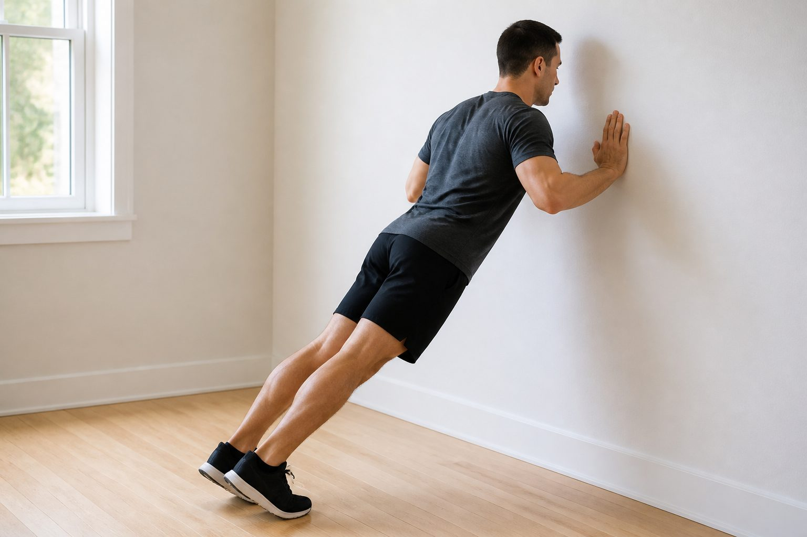
Home. Target RIR 2–3. Match the ID in the Gym log.
A push-up is a moving plank. Keep a stiff line while the arms bend and straighten. Chest and triceps work. Neck, low back, and hips stay quiet.
Easier to harder.
pu-wall Wall push-upchesttriceps front-deltsabs
Hands on wall, body straight, walk feet back. Chest, triceps, shoulders. Use when the floor is too hard.

pu-incline Incline push-upchesttriceps front-deltsabs
Hands on bench, sofa, or table. Building volume.
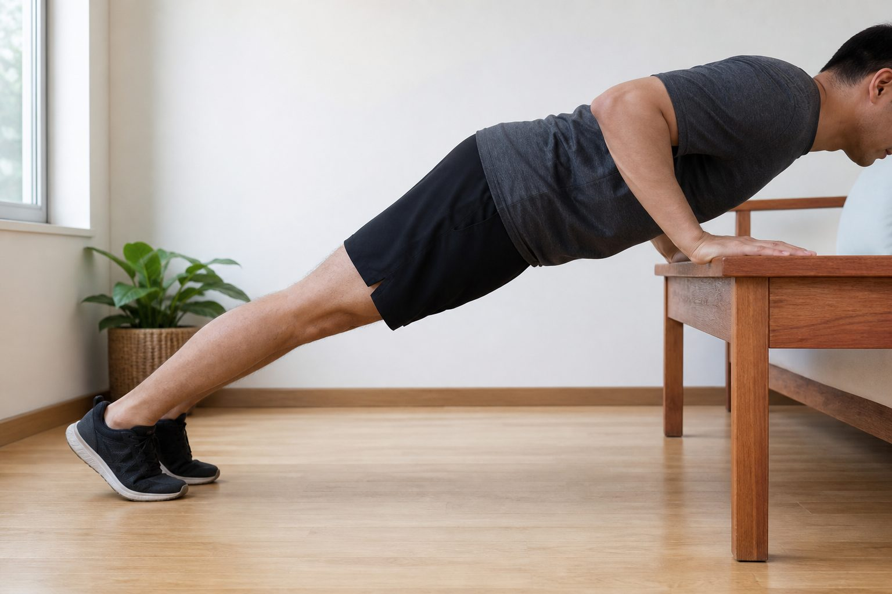
pu-knee Knee push-upchesttriceps front-deltsabs
Knees down, still a straight line from head to knees. Last reps when full form breaks.
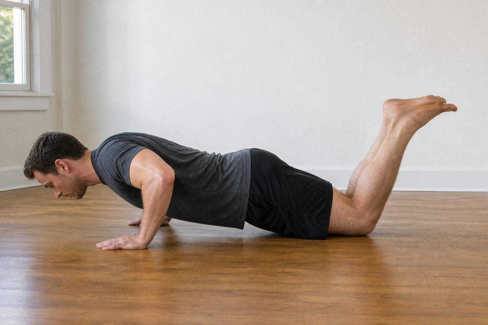
pu-std Standard push-upchesttriceps front-deltsabs
Hands under shoulders, feet together or small V. Default.
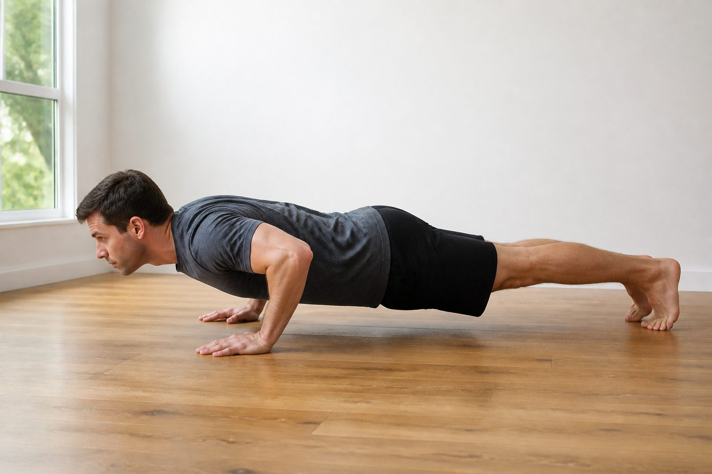
pu-wide Wide push-upchest tricepsfront-delts
Hands outside shoulders. Chest bias.
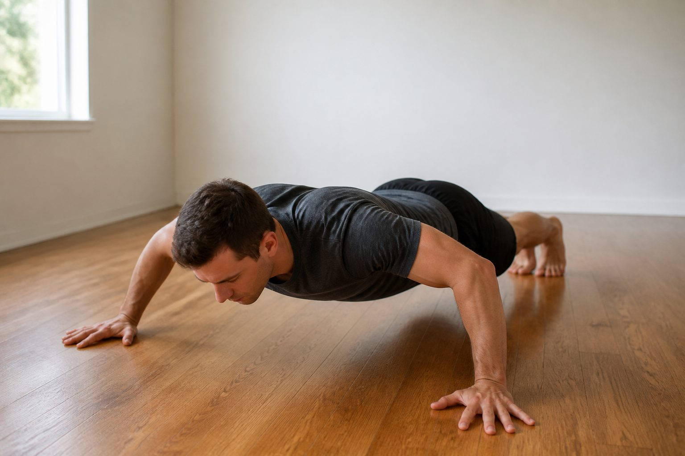
pu-narrow Narrow / hands-intricepschest front-deltsabs
Hands closer than shoulders, still on the floor. Triceps, inner chest. Matches Friday “hands near center”.
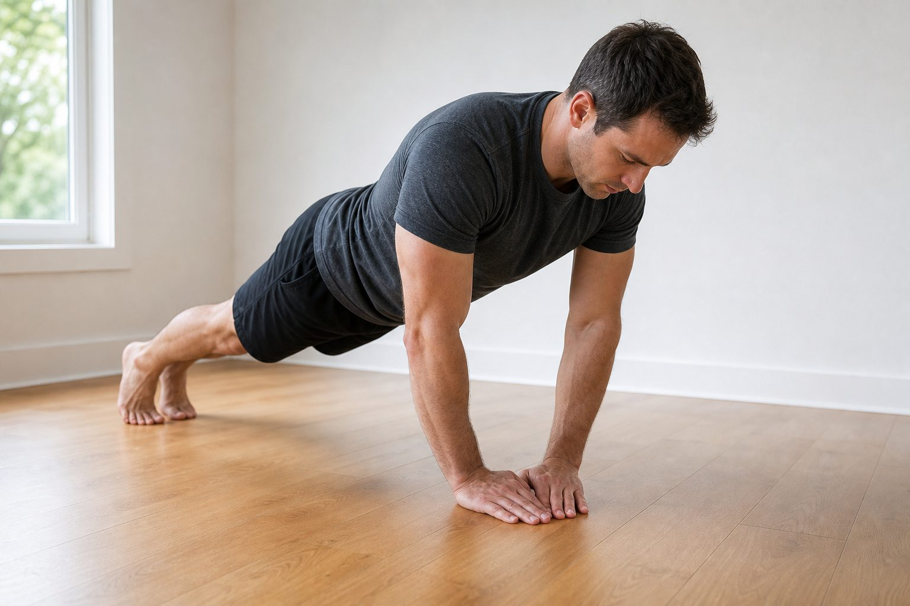
pu-low Hands-low / tricepstriceps chestabs
Hands lower on the ribs, elbows stay tucked. Triceps. Matches Friday “hands low”.
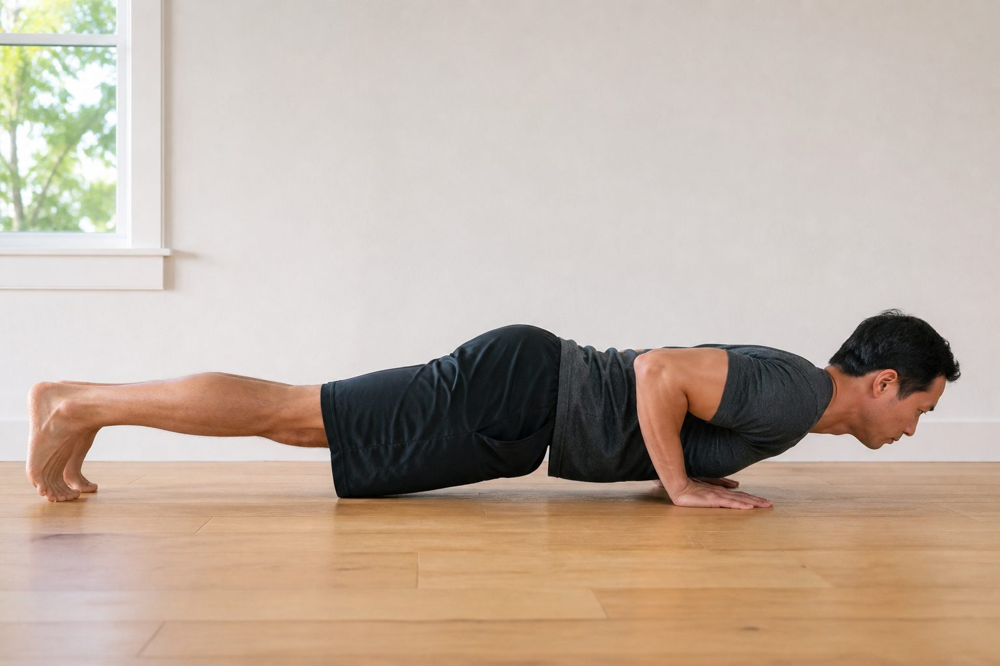
pu-diamond Diamondtriceps chestfront-delts
Thumbs and index fingers touch under chest. When hands-low is too easy.
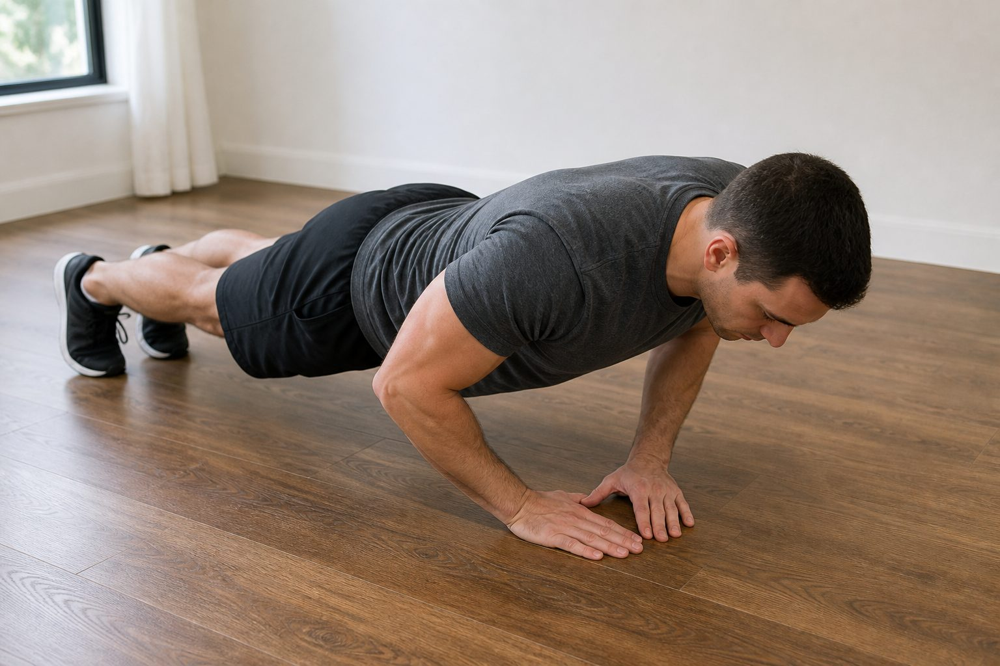
pu-deficit Deficitchest tricepsfront-delts
Hands on books/blocks, chest between. Extra range.
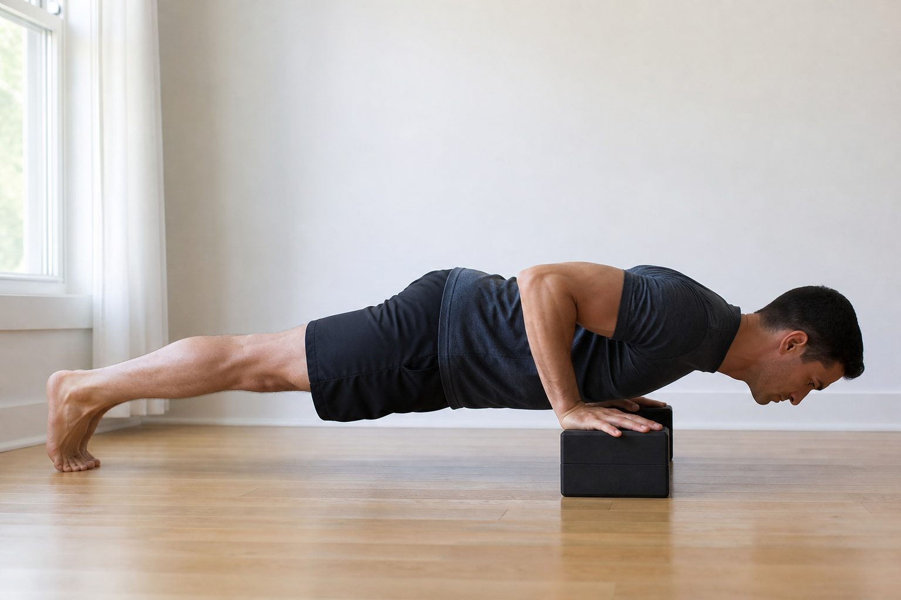
pu-decline Declinechestfront-delts tricepsabs
Feet on a chair. Upper chest, shoulders.
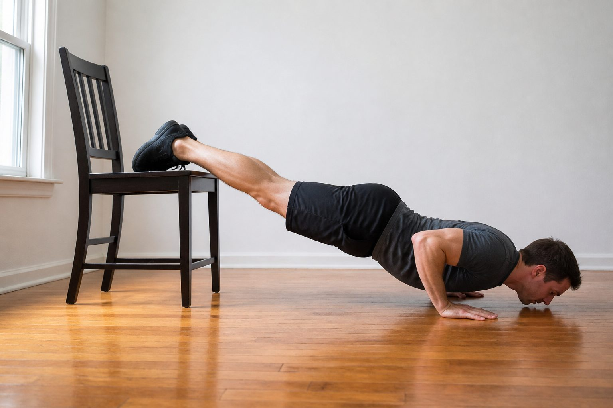
pu-pike Pikefront-deltsshoulders tricepsabs
Hips high, head toward floor. Shoulder work, not a chest default.
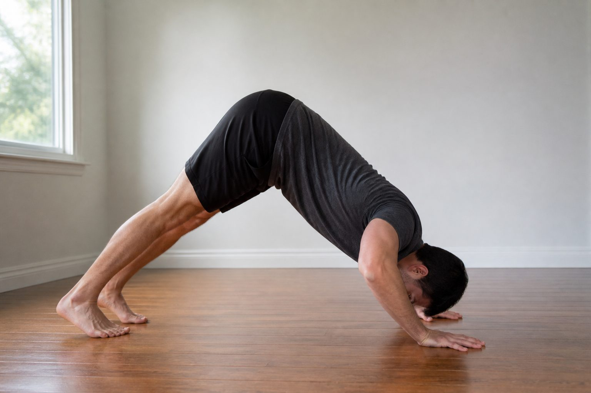